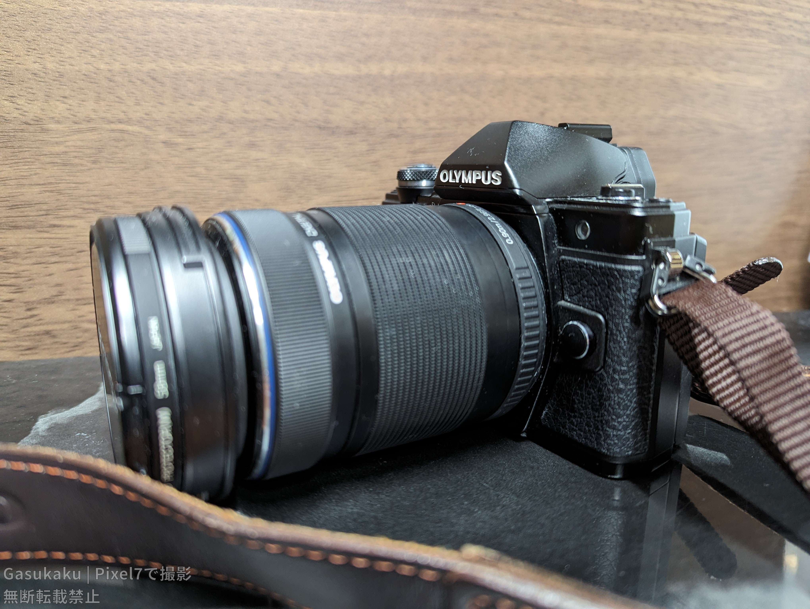
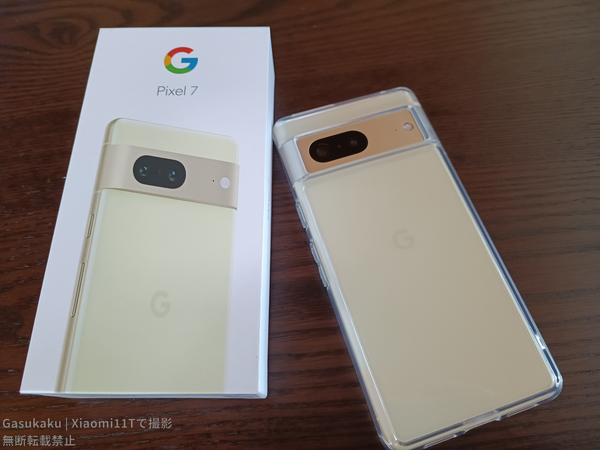

撮り信環境
僕が撮り信（信号機を撮影している信号機マニアのこと）活動をするときに気を付けていることやカメラ機種などを公開しています。是非参考にしてください。実質ガジェット紹介
warning 自己ルール
photo_camera カメラ機種紹介
メインカメラ：OLYMPUS EM10 Mark ii、交差点風景用兼メインスマホ：Google Pixel7
 普段はEM10 Mark iiに望遠レンズをつけて撮影しています。以前はNikon Coolpix A900でしたが、中の人の雑な扱いによりレンズ繰り出し部分のギアが故障し、使用不能になりました。(修理したいので液晶割れA900を譲ってくれる方がいたら連絡してください)